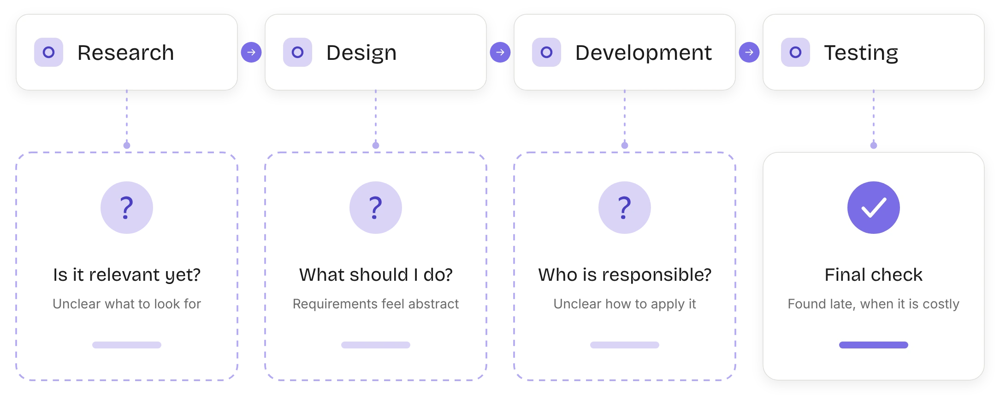
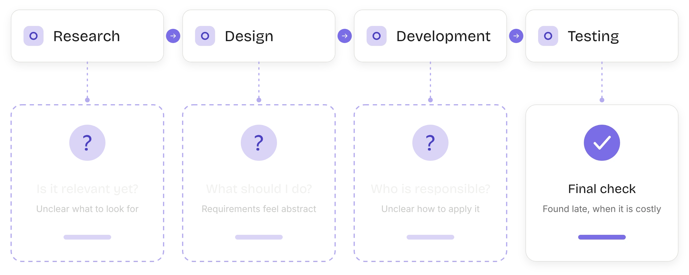
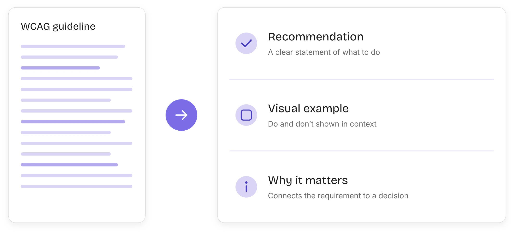
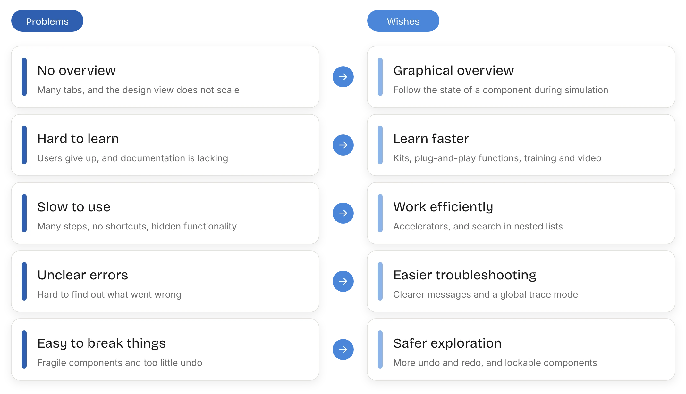
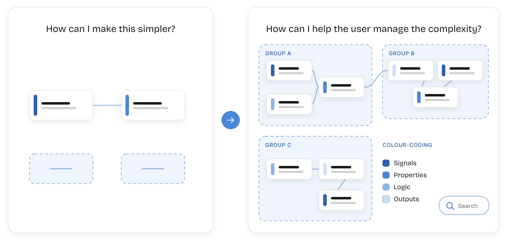
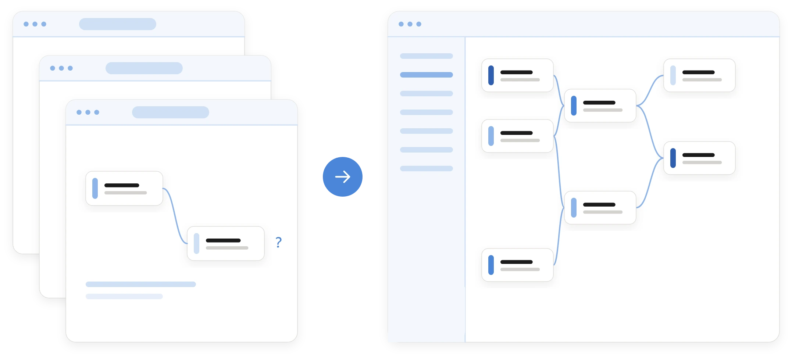

I simplify complex systems by making sure that solutions are designed based on an understanding of how users think and act.
I create alignment
I connect user needs, business goals, and technical constraints.
I drive progress
I help teams move forward through structure, collaboration, and iterative problem solving.
I sweat the details
Because great products depend on thousands of thoughtful decisions.
About me
I have always been fascinated by human thinking and how differently we can experience the world
That led me to study cognitive science. I then pursued a master's degree in interaction design to apply my theoretical foundation in a practical domain where I could also make use of my creative side.
Creativity has always been an important part of my life, from writing and photography to various personal projects. Today, I bring that creative side into my work, combining it with an understanding of people to create experiences that are useful and inclusive.
I live in Stockholm with my fiancé Max, but I am born and raised in Umeå. Whenever I get the chance, I head back north to visit my family and spend time in our summer house on the coast. It is where I find the space to recharge, reflect, and return with a fresh perspective.
Designing a driver experience that minimizes friction and keeps attention on the road via the platform Smart Dash —
UX/UI Designer & Area LeadScaniaJan 2023 – NowContinuous DevelopmentNDA restricted
Summary
Smart Dash was developed to create a safer, smarter and more connected driving experience by bringing together the vehicle’s digital functions in a common platform. I have contributed to the development through all phases of the design process - from exploring user needs to designing, testing, and refining UX/UI solutions. I have also contributed to the design system and broader interaction patterns, helping create a more consistent and scalable experience.
My role
Delivering end-to-end UX design for digital interactions with vehicle functions
Developing reusable patterns and frameworks used across the platform
Collaborating cross-functionally in an agile, global context
Guiding design explorations and supporting other designers within my domain
Outcome
Delivered, validated, and refined numerous HMI experiences now used by thousands of professional drivers every day
Established interaction patterns, guidelines and frameworks adopted across multiple features
Helped establish ways of working for a newly formed team, created onboarding material and supported designers in adopting established HMI workflows
Coordinated upcoming initiatives and influenced interaction strategy within a key HMI domain, balancing immediate feature needs with long-term strategy
Challenge
Designing for professional drivers operating in contexts where attention is scarce and safety is key
Every interaction must be carefully designed to minimize cognitive load and avoid distraction. This makes prioritization of information and clarity of interaction central to the design.
The domain is also complex. Designs must account for varying hardware capabilities and constraints, as well as regulatory requirements and safety standards.
Designing in-vehicle interfaces for trucks and buses also means that we design across a wide range of applications with significantly different user needs and use cases. Solutions must therefore be adaptable while maintaining consistency and usability.
I start by making sure that I understand the problem
The approach to reach this understanding varies depending on how well understood the problem is. Sometimes it requires in-depth user research, while in other cases it is more about alignment and benchmarking to establish a shared understanding.
I explore concepts when the problem is understood
Depending on the context, the exploration phase may involve sketching, wireframing, or prototyping, with ideas iteratively refined through stakeholder feedback and design reviews.
I use testing to identify the strongest solution when the direction is not clear
Testing plays an important role in identifying the strongest solution. The level of testing may however vary depending on factors such as timelines and novelty of the concept. Regardless, I make sure that solutions are evaluated - whether within the design team, with stakeholders, or with users.
I progress to detailed design when the direction is set
This phase often involves collaboration with other related design roles to further detail the design.
I align cross-functionally and with stakeholders throughout the whole process
This is necessary to make sure that the design is understood and so that we can address uncertainties when they arise, all to ensure a high-quality solution.
Working in this domain has trained me to balance several perspectives and constraints
I have learned to balance the user’s immediate needs, the safety implications of an interaction, technical and hardware constraints, regulatory requirements, and how a solution needs to work across a much larger platform.
I have shifted from feature-level thinking to system-level thinking
As my role has evolved and I have taken ownership of a dedicated area, I have learned to consider how features relate to and depend on one another, and how individual decisions shape the system as a whole.
I have learned to challenge assumptions
In an in-vehicle environment, every feature competes for the driver's limited attention, making it essential to carefully consider what deserves to be included. Rather than simply making a request work, I have learned to investigate its purpose, challenge its assumptions, and weigh its value against the complexity it introduces. This has made knowing when to say no, and being able to explain why, an increasingly important part of my design process.
Enabling accessibility through a guide that turns WCAG guidelines into practical, easy-to-adopt practices —
UX/UI DesignerDaresay by Knightec2022 – 2023Internal initiative
Summary
As part of an internal accessibility initiative at Daresay by Knightec, I contributed to developing a guide to make WCAG guidelines easier to apply in practice. With the guide’s foundation already established, my role focused on interpreting the guidelines and translating them into clear, actionable design guidance.
My role
Selecting the WCAG guidelines relevant to interface design and translating them into practical guidance
Benchmarking existing accessibility resources and establishing the structure and visual framework for the guide’s “do’s” and “don’ts”
Contributing to the editorial direction of the guide through UX writing, proofreading, and iterative content development
Outcome
A practical resource that translated complex accessibility standards into actionable guidance for day-to-day design and development
Adopted both internally and by external partners and clients, helping establish a more consistent way of working with accessibility
Challenge
Bridging the gap between WCAG guidelines and practical application
As accessibility requirements for digital services increased, the team identified a need to make WCAG guidelines easier to understand and apply in practice. Knowing that accessibility matters is one thing; knowing how to incorporate it into everyday design and development is another.
Problem
Knowing when and how to incorporate accessibility in the design and development process
Before I joined the project, the team did research exploring how designers and developers generally approached accessibility and where they encountered difficulties. This made it clear that by some, accessibility was rather seen as a final check than an integral part of the design and development process. The problem here was twofold: firstly, that users didn’t know what their responsibilities were, and secondly, what they meant in practice. My contribution in this project mainly focused on the latter.


Design process
Translating WCAG guidelines into practical design guidance
When I joined the project, the team had just started to work on the guidelines. My main contribution was translating accessibility requirements into practical guidance for designers. I reviewed WCAG guidelines, benchmarked existing examples of accessibility best practices, and created initial drafts of “do’s and don’ts” to demonstrate how the requirements could be applied in practice. The drafts were later refined and developed further.
Through this work, I recognised that simply stating what to do or avoid was not always enough. There was also a need to understand why each guideline mattered to help with learnability. I therefore structured each example around three elements: a clear recommendation, a visual example, and an explanation of why it mattered. This helped connect abstract requirements to concrete design decisions.

Result
A guide that has proven its value for designers and developers
Since the guide was published, it has been adopted both internally and by external partners and clients. This shows that it provides real value for designers and developers in applying accessibility practices, which in turn helps create more accessible products. A win-win for everyone involved.
What I would do differently
Building a stronger foundation before moving into visual design
At the time of this project, I was eager to start exploring how the guidelines could be communicated visually, which led me to move into benchmarking and developing examples before I had fully understood the guidelines myself. As my understanding deepened, I had to revisit and refine parts of the work, leading to more iterations than necessary.
Looking back, I would spend more time understanding the requirements and how they connect to real design and development decisions before moving into visual exploration. This would help me build a stronger foundation and create guidance that not only explains what to do, but also makes it clearer how accessibility can be integrated into the design process.
What I learned
Turning guidelines into design decisions
I gained a much deeper understanding of WCAG by working directly with the guidelines – reviewing requirements, interpreting what they meant in practice, and finding concrete examples of how they could be applied to real interfaces.
Making accessibility actionable
One of my biggest learnings was that knowing the guidelines is only part of the challenge. To encourage adoption, accessibility needs to be translated into practical, easy-to-recognise design decisions that fit naturally into existing workflows. Although this guide helps with the first part, it may still be relevant to consider how these guidelines fit into the actual design and development process.
Improving the usability of Smart Components in RobotStudio through redesign of a graphical programming interface —
Master’s Thesis in Interaction DesignABBJan 2022 – June 2022
Summary
I did my master’s thesis at ABB Robotics together with a classmate, where we redesigned the Smart Components experience in RobotStudio to make a complex technical workflow easier and more efficient to use. Through research, iterative concept development, prototyping, and usability testing with professional robot programmers, we designed a new interface that users rated positively, highlighting improved visibility and workflow efficiency.
My role
User research with professional RobotStudio users
UX/UI design from early concepts and low-fidelity prototypes to a high-fidelity interactive prototype
Iterative usability evaluation throughout the design process, including a final evaluation with four expert users
Outcome
A redesigned interface to build Smart Components, that scored 78/100 on the System Usability Scale (SUS) and was perceived as a clear improvement over the existing interface
Background
Smart Components is a feature that enables professional robot programmers to simulate behaviors in robotic stations
The feature exists in RobotStudio, the world’s most widely used robot programming tool. To simulate behaviors with Smart Components, the user has to connect building blocks representing specific functions in a graphical programming interface.
Challenge
Figuring out why Smart Components was perceived as cumbersome to use
Before the start of this project, Smart Components were already widely adopted and played an important role in robot programmers’ workflows. However, despite their reliance on the functionality, there had been recurring feedback that working with Smart Components was difficult. This established a clear starting point for the project: the challenge was to understand what aspects of the experience made it difficult, and where there was potential to improve it.
Users were forced to navigate between multiple tabs to manage interconnected components, and had no way to get an overview
To reach this understanding, we reviewed both the existing interface and the context in which Smart Components were used. I did literature research, studied the existing interface in RobotStudio and conducted interviews with professional users to reveal where users experienced friction. We translated these insights into a set of design requirements used as a basis for the upcoming exploration phase.

Focus of the exploration
Helping users manage complexity and get an overview without removing or hiding required functionality
The exploration took off focusing on the question above. This led to concepts around grouping, visual differentiation, responsive components and reducing the amount of navigation required. The concepts were repeatedly evaluated and refined before moving into high-fidelity design.

Key decision
Bringing all features to create and edit Smart Components into one coherent design editor
The redesigned interface brought together the tools needed to create, connect and configure Smart Components while retaining the functionality users already relied on. Additionally, we introduced new features in the interface to even further improve the overview and flexibility.

New interface features
Responsiveness
To improve the overview when managing many interconnected components, we introduced responsive components that reveal different levels of detail depending on zoom level.
Color-coding
To make properties and signals associated with the components easier to distinguish in an overview, we introduced color-coding.
Grouping
To make it easier to organize and reuse components, we introduced a feature to group related sub components. This was also a way to reduce clutter.
Expand and collapse
Allowing the users to expand and collapse panels as needed was intended to give users more control over the workspace.
Search
To help with findability in complex components, we introduced a search function.
The components reveal more detail as the user zooms in. Individual components can also be expanded to temporarily reveal their details, even in a zoomed-out view.
Result
Users rated the new interface positively, highlighting improved visibility and workflow efficiency
The final high-fidelity prototype was evaluated with four professional RobotStudio users through the System Usability Scale (SUS) and semi-structured interviews. The interface received a mean SUS score of 78/100, and participants generally considered it an improvement over the existing interface. They particularly valued having all tools accessible in one view, while grouping and responsive components were seen as effective ways to manage complexity and support more efficient workflows.
What I learned
Usability does not necessarily mean simplicity
Professional users often need access to sophisticated functionality. The challenge is therefore to understand the complexity they are already working with and make it easier to navigate, rather than simply hiding or reducing it. This led to a change in perspective, from: “How can I make this simpler?” to “How can I help the user manage the complexity?”
There are problems that cannot be addressed by the UI alone
The evaluation of the final design concept revealed an important limitation in the solution. While the graphical interface could make Smart Components easier to organise and navigate, some of the underlying complexity came from the low-level programming model itself: users still needed to combine many highly specific building blocks to create relatively complex behaviour. No amount of interface refinement could completely solve that underlying issue.
Users are an essential source of knowledge when systems rely on domain expertise
The project also gave me my first deeper experience of designing for highly specialised professional users. Rather than assuming that I could become an expert in their domain myself, I learned to use users and domain experts as an essential source of knowledge throughout the process. My role was to understand their mental models and workflows well enough to identify where design could genuinely support them. That experience has stayed with me in my later work with complex professional tools, where domain knowledge, user expertise and design expertise need to meet rather than replace one another.